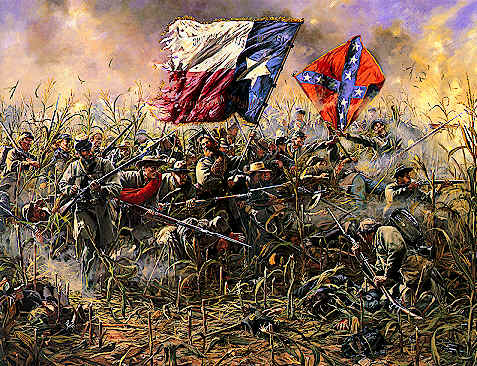

The American civil war was from 1861 to 1865. It started because the Northern(Union side) and the Southern( Confederacy side) United States had got many issues, such as slavery and westward expansion. By the time it ended in 1865, over 620 thousand of 2.4 million soldiers killed, millions people was injured and the South destroyed
1861
Outbreak of the civil war
1862
The real civil war

1863
A emancipation proclamation
1864
1865
End of war